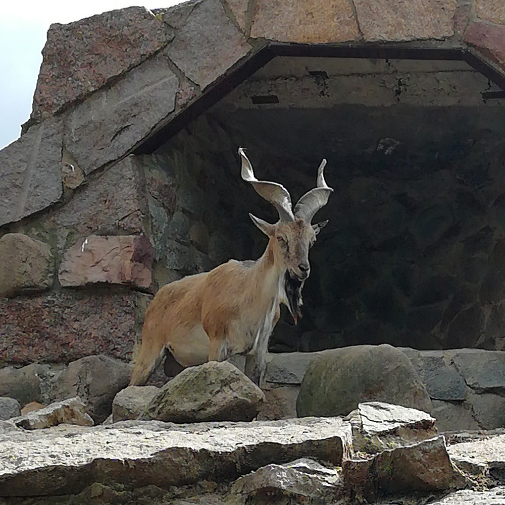
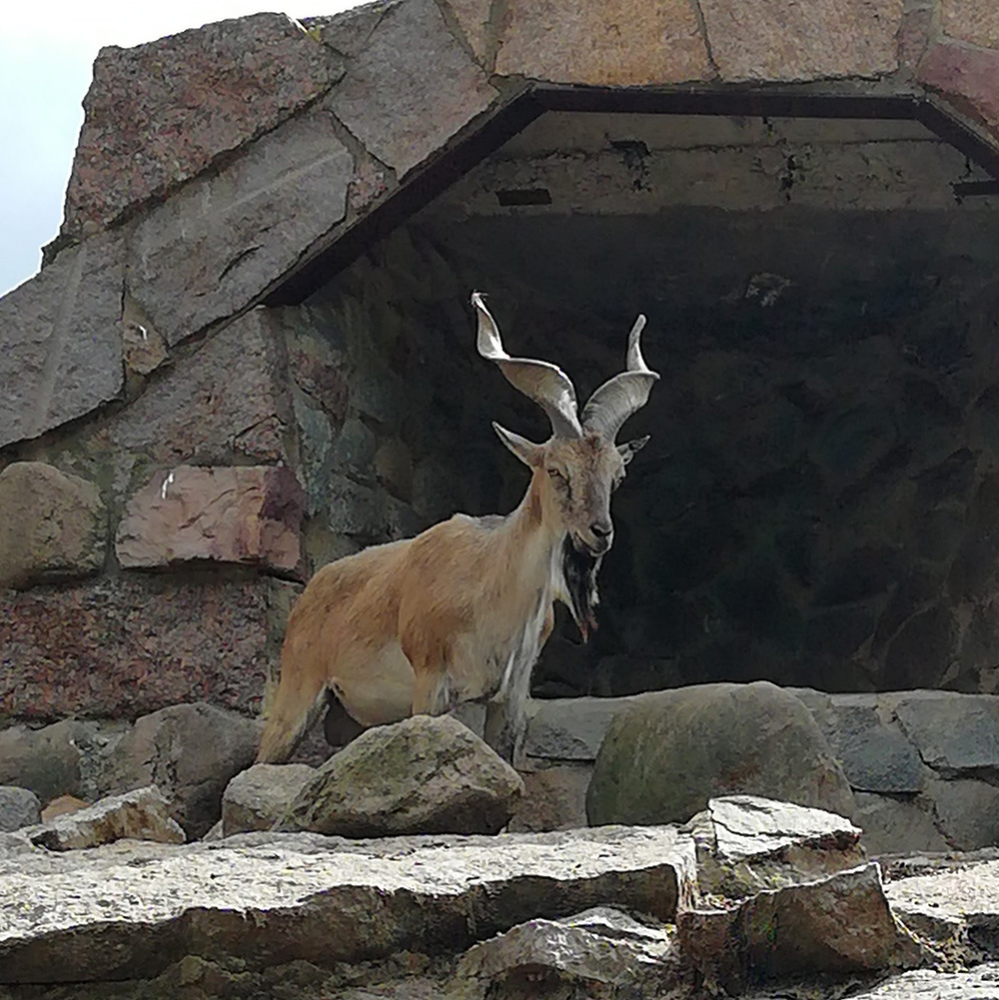

Там, где живет вдохновение
Поход на все эти чудесные мероприятия не может обойтись без фото всего, что зацепило глаз. Зафиксировать момент, чтобы к нему вернуться через некоторое время. Рассмотреть еще раз, отметить новые детали и начать воплощать в жизнь появившуюся на основе этого идею. Иногда впечатления настолько сильны, что готовая работа возникает перед глазами в процессе созерцания произведения, композиции или объекта.


В Аптекарском огороде нужно провести целый день, чтобы вдоволь насладиться разнообразием цвета, формы и размера, поразмышлять над идеями и вдохновиться новыми. Полюбоваться цветением лилий и лилейников, гайллардий и бегоний. Умудриться рассмотреть нежно-розовые цветки василистника Делавая размером с горошинку, влюбиться во вранцузский цветник и поздороваться со шмелем.

Прогуляться среди множества представителей хвойных, вдохнуть их необыкновенно свежий аромат и потеряться в пятидесяти оттенках зеленого. А если хочется оригинальности, то нужно заглянуть в оранжерею с кактусами. Уж они мастера по части необычайно удивительных форм и размеров.


Посещение зоопарка или аквариума, это как заглянуть в мега шпаргалку - формы, рисунки, цвет и цветовое сочетание, шерсть, перья, чешуйки...

Природа создала все это великолепие не просто так. Для зверя или птицы это способ для нормального существовать в своей нише. А для человека это прежде всего пища для глаз: контрастный рисунок шерсти леопарда и тигра, монохромные зебры, панды, пингвины, глаза на крыльях бабочек или перьях павлина, а сколько цветов, оттенков и форм на коралловом рифе. И все это всегда находится в постоянном движении.
 
